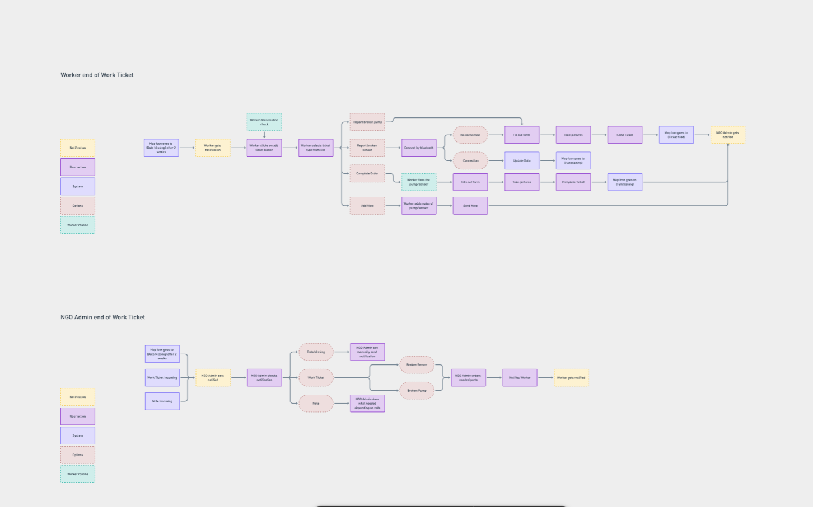
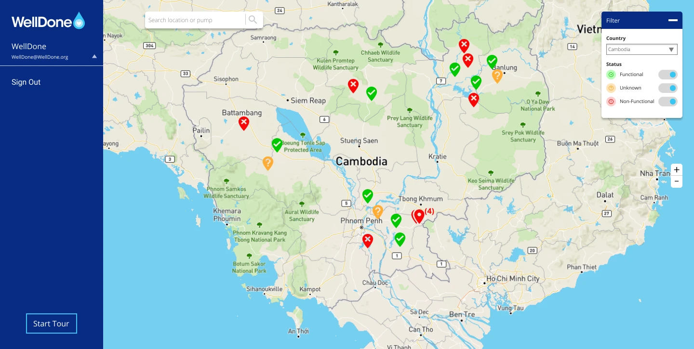
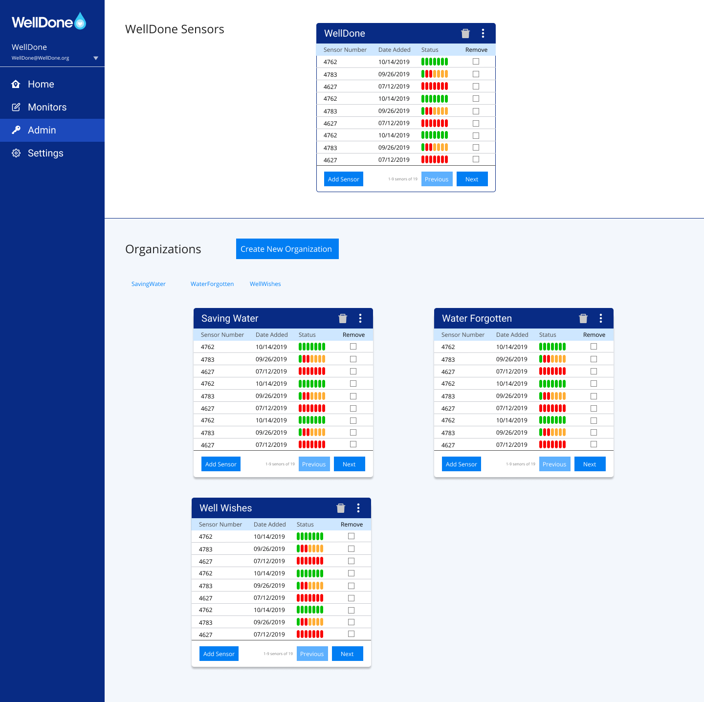
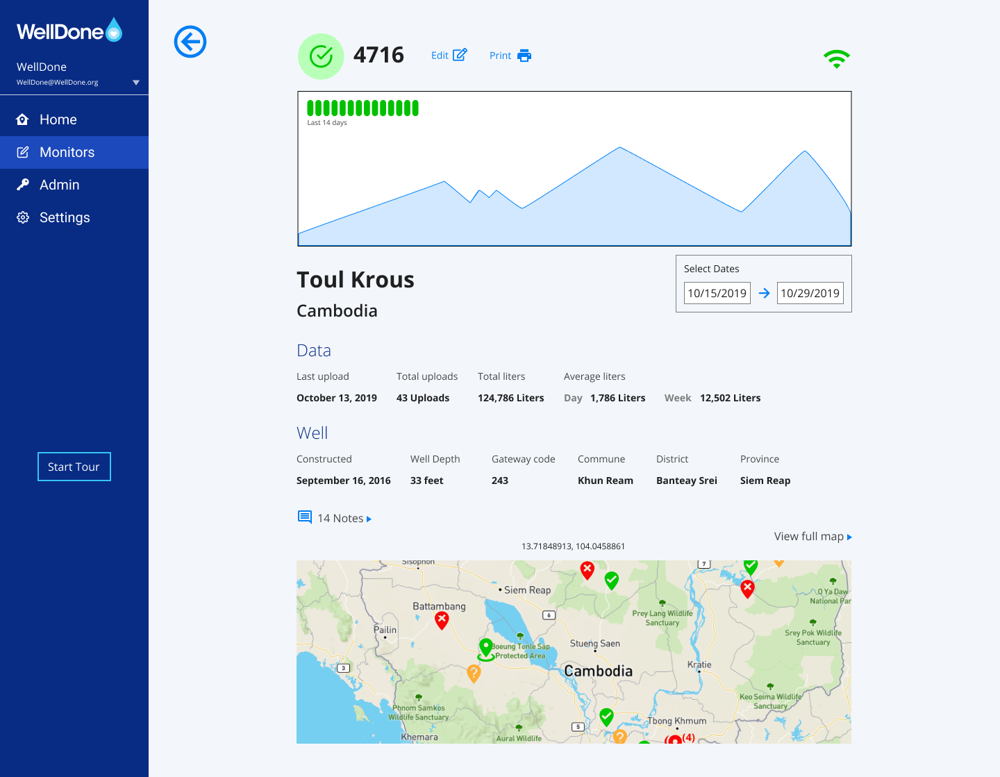
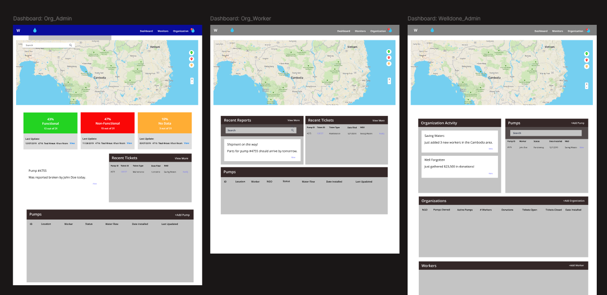
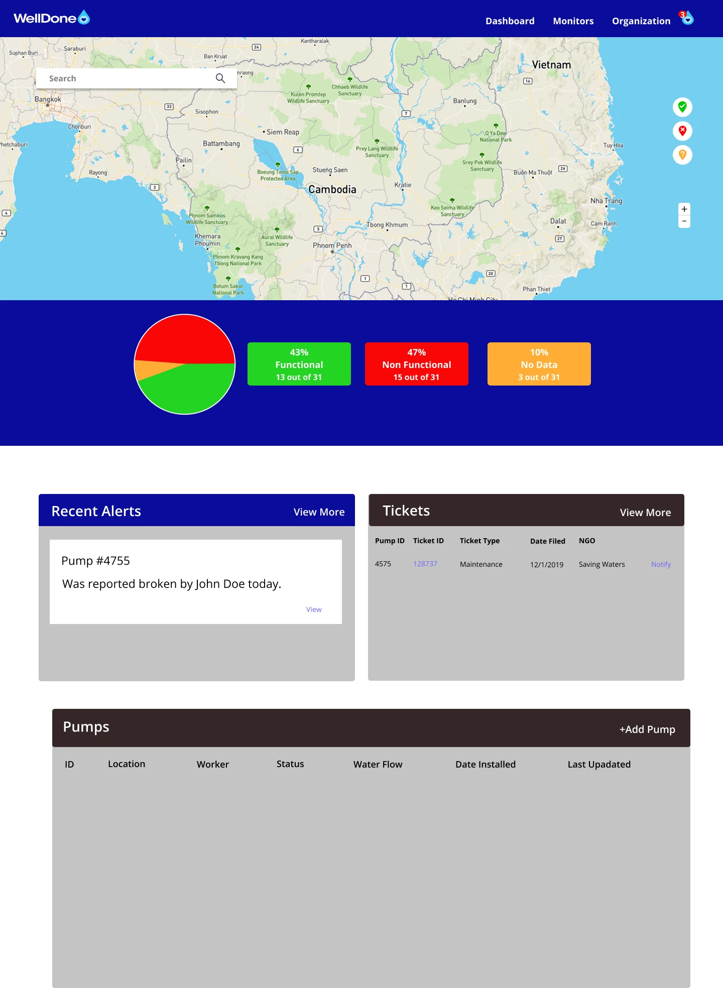

01The Problem
From seeing data to understanding what matters
Installing a well is only part of providing reliable access to clean water. Once infrastructure is in place, WellDone still needs to understand what is happening with it.
The organization needed a way to monitor its network of wells and the sensor data associated with them without forcing users to dig through disconnected information to understand what required their attention.
The challenge for us was figuring out how to turn a large amount of operational information into an interface that made the condition of the system understandable.
The core question: How do we help someone move from seeing data to understanding what needs their attention?
02Stakeholder Research
The first task wasn't drawing screens
We didn't begin with an existing WellDone product that we were asked to redesign.
Instead, the project began with information provided by stakeholders and findings from interviews they had already conducted. Those conversations gave us insight into how wells were being monitored, what information mattered to the people responsible for them, and where a digital monitoring system could support that work.
Our first task was therefore not drawing screens.
It was figuring out what the information meant.
Translating research into product requirements
We worked through the stakeholder and interview findings to identify the tasks the platform needed to support.
Several needs became central to the experience:
- Seeing the location and overall status of wells
- Understanding which wells required attention
- Reviewing sensor and historical data
- Finding information about an individual well
- Identifying maintenance or operational issues
- Moving between a network-level view and detailed information without losing context
Those needs became the foundation for the product structure.
03Turning Information Into a Workflow
Organizing information around how it's actually used
Once we understood what people needed from the system, we began organizing that information around the way someone would actually use it.
Rather than treating every piece of sensor data as equally important, we focused on helping users answer increasingly specific questions:
That progression became the backbone of the experience.

This was particularly important because the platform wasn't just a reporting tool. It needed to help users interpret the state of physical infrastructure distributed across multiple locations.
04Designing the Monitoring Experience
Three ways of understanding the system
The interface began taking shape around three primary ways of understanding the system.
Geographic monitoring
The map provided a high-level view of WellDone's wells and allowed users to understand where infrastructure was located.
Rather than making the map purely visual, we treated it as a navigation and monitoring tool. Selecting a location could lead users deeper into the information associated with that well.

Sensor data
Once users identified a well they wanted to investigate, they needed access to the information being collected from it.
We designed views that organized sensor information into something that could be scanned and compared rather than presenting users with an undifferentiated stream of data.

Individual well information
The individual-well experience brought the relevant information together so users could understand what was happening at a specific location without bouncing between unrelated screens.

05Finding the Right Level of Information
It wasn't whether information should exist — it was when it should appear
One of the biggest design challenges wasn't determining whether information should exist.
It was deciding when it should appear.
A monitoring dashboard can become useless surprisingly quickly when every measurement, warning, status and control competes for attention.
The interface needed enough information to help someone recognize a problem without requiring them to understand everything about a well before deciding whether it deserved further investigation.
That led us toward a layered approach:
Network → Status → Well → Data → Detail
Each level answered a different question and gave users a path toward more information when they needed it.
06Iterating on the Dashboard
Access isn't the same thing as clarity
As the interface developed, we explored different ways of presenting the information stakeholders had identified as important.
Some versions exposed a significant amount of information directly on the dashboard.
That technically gave users access to everything they might need, but access wasn't the same thing as clarity.
The more information we surfaced simultaneously, the harder it became to understand what actually mattered.

We began reducing that competition and strengthening the hierarchy between overall system health, wells requiring attention, and the detailed information users could investigate afterward.

Instead of asking the dashboard to explain everything, we used it to answer a much simpler question:
Where should I look first?
07A Shift in the Experience
Less about adding, more about understanding
The project eventually reached a point where the problem became less about adding functionality and more about making the functionality we already had understandable.
That changed the way we approached the interface.
Rather than continuing to add information to individual screens, we focused more heavily on hierarchy, navigation and progressive disclosure.
Users could begin with the condition of the overall network and move deeper only when something required investigation.
That made the product feel less like a collection of sensor readings and more like a monitoring system.
08The Final Direction
Overview → problem → location → evidence
The resulting experience connected WellDone's geographic, sensor and well information into a single monitoring workflow.
Users could begin with the larger network, identify a location or potential problem, investigate an individual well, and then examine the underlying information in greater detail.
{{ wdCur.name }} {{ wdCounter }}
{{ wmCur.name }} {{ wmCounter }}
The value wasn't any individual screen.
It was the connection between them.
The product created a path from overview → problem → location → evidence, allowing the information WellDone was already collecting to become something people could act on.
09What I Took Away
Information isn't understanding
WellDone was an early lesson for me in how much UX work happens before an interface exists.
We weren't handed a polished product and asked to improve it. We were handed research, stakeholder knowledge, requirements and a complicated real-world system and had to determine what the digital experience should be.
That meant making decisions about hierarchy, navigation, workflows and information architecture before worrying about what an individual screen looked like.
It also taught me something that has followed me into a lot of my later work:
Giving someone more information doesn't necessarily give them more understanding.
The job of the interface is to help them figure out what matters.